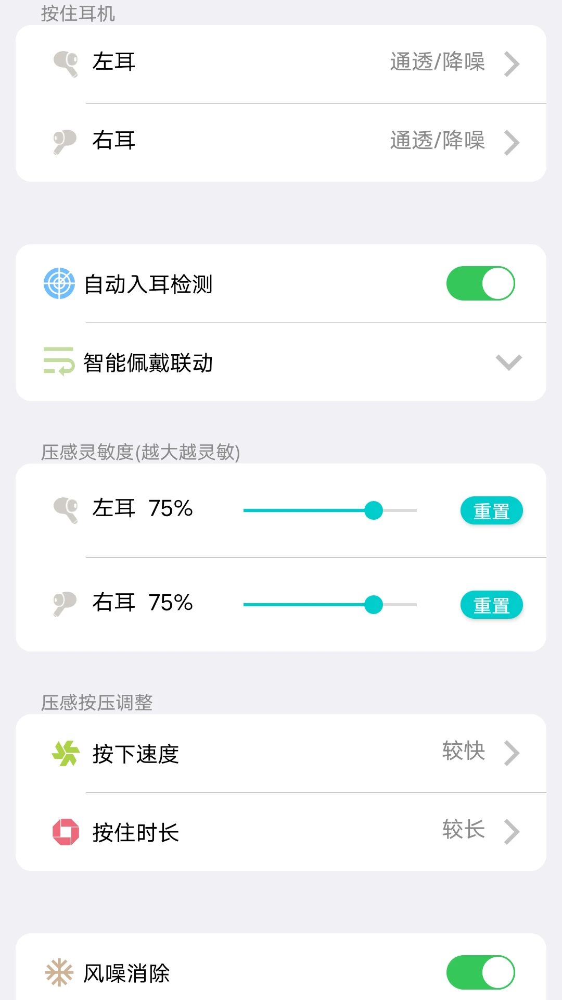

flycc 到底值不值得掏钱？这笔账我替你算清楚
定价拆解到三类用户画像，免费版够不够用、付费后每小时成本多少、不付这笔钱还有什么替代——flycc 的付费决策账本一页讲透。
先抛问题：它到底值不值得掏钱？
三个月前我换了一副中高端 TWS 耳机，随之用上了配套的 flycc 管理 App——在flycc官网上就能看到它的完整功能介绍。从开箱那刻起，App 就在首页给我弹了个「Pro 会员限时 5 折」的横幅——月 12 元、年 98 元、买断 199 元，三档任选。当时我随手关了横幅，心想一个耳机管理 App 能有什么付费内容。
然后三个月过去了，我改了不下二十次手势、调了七八轮 EQ、经历了三次固件升级、跑过两趟验真流程。昨天又弹 Pro 广告的时候，我发现自己已经在认真掂量：到底该不该掏这 98 块的年费？
这篇就是我给自己算的账，也算给你。

定价拆解：免费版给什么，付费版多什么
先把 flycc 现有的功能边界拉清楚——免费版和 Pro 的分野在哪，每一档付费买的是什么。
免费版：够用，但有几个明显的天花板
免费版覆盖了 TWS 用户 80% 的日常操作——安装包从flycc下载直接拿就行，系统蓝牙配对、App 内改手势（轻点两下可选播放暂停、切歌、语音唤醒）、三档固定降噪切换、OTA 固件升级、查看双耳及充电仓电量、验真伪、恢复出厂设置、打开帮助指引。连接流程就是标准的四步，flycc文档里有每步的成功标志详解：系统蓝牙配对 → App 选设备 → 改配置实时同步 → 个别项需恢复出厂才生效。
说它够用真的够用——耳机连得上、声音能调、没电了能看见、坏了知道怎么重置。但用久了你会碰到几个天花板：
- 手势只给了轻点两下的四个选项，没有自定义的长按或多点触控序列；
- EQ 只有几个预设档（流行、摇滚、人声增强），想拉一条自己的曲线做不到；
- 降噪是三档固定（深度、轻度、关闭），没有针对不同场景的细调——通勤和图书馆用同一档总觉得哪里不对；
- 固件升级要等公推，beta 通道不开；
- 设置不云端备份，换手机或重置后要重新配一遍。
Pro 版：解锁的不是功能，是「自由度」
Pro 解锁的核心是自定义权，而不是「多了某个功能」：
| 功能 | 免费版 | Pro 版 |
|---|---|---|
| 手势 | 轻点两下 4 种固定选项 | 轻点 + 长按 + 多点触控序列全开，左右耳独立配 |
| 降噪 | 3 档固定 | 场景化曲线（通勤/地铁/图书馆/健身房自动切）+ 手动 10 段调节 |
| EQ | 预设档 | 10 段精调 + 自定义预设保存 |
| 固件 | 公推 | Beta 通道抢先 + 回滚 |
| 多设备 | 单次绑定 | 3 台设备快速切换 |
| 设置备份 | 无 | 云端同步 |
| 客服 | 社区自助 | VIP 工单优先响应 |
定价三档：月 12 元、年 98 元、买断 199 元。年付相比月付相当于打 6 折，买断折算下来用两年就回本。
算账：分三类人，各自的答案不一样
"值不值"从来不是绝对的，取决于你是怎么用这副耳机的。
轻度用户：每周开三次，地铁通勤半小时
免费版完全够用。你关心的是耳机能不能连上、降噪够不够静、没电了能看见提示。flycc 免费版的四步连接流程跟着指引走一遍就通了，轻点两下切歌够顺手，三档降噪在地铁里也压得住低频。
算一笔时间账：付费后解锁的自定义降噪曲线能让通勤路上的听感好 15%，但你一周只听三次，一次半小时——一年省下的"折腾时间"撑死 3 小时。98 元年费换 3 小时的"不用调"，约每小时 32 元。而你调整一次固定档只需要 3 秒。
结论：别付。免费版全搞定，省下的钱加一副硅胶耳塞更实在。
主力用户：每天通勤 + 午休听歌，日均两小时
这是最纠结的一群。你每天掏耳机十几次，手势的顺手程度直接影响通勤体验；公司附近地铁换公交那条路，有一段施工噪音特别大，固定三档降噪在那段路不够用、在公司又太闷；午休时候想听点白噪音，固定 EQ 的低频下不去、高频又顶耳朵。
算一笔时间账：Pro 版的场景化降噪自动切换能让你每天省掉 3~4 次手动切档的动作，一年下来是 4000 次以上的"不掏手机"；自定义 EQ 让午休听感好 30%，这个体验提升是可感知的。按日均两小时算，一年用耳机 730 小时。98 元年费 → 每小时成本 0.13 元。
每小时一毛三分钱，换一年"手势不别扭、降噪不用调、听感不将就"的体验。这个账，我觉得能付。
但别急着点头——先问问自己：你是不是已经在现有的预设档里找不到舒服的那个了？ 如果免费版的摇滚档调个音量也能凑合，那这 98 块就是"锦上添花"而非"雪中送炭"，可以再等等。
重度用户：多设备切换 + 固件党 + 折腾手
直接买断 199。
你有三台设备（主力手机 + 工作机 + 平板），每天在不同场景切来切去；你追固件更新追得比系统还勤，OTA 一出公推就刷完、还等着 beta 通道尝鲜；你手势改了不下三十次、EQ 曲线拉了五版预设——flycc 已经不是一个"工具"，是你这副耳机的"控制中枢"。
算一笔时间账：免费版每次换设备要重新配对、重置后重新配所有设置、等公推固件要两周——这些时间成本一年算下来至少 20 小时。买断 199 元 → 每小时成本 约 10 元。而且买断是终身的，两年后还能用。
重度用户的核心诉求是不折腾，Pro 的多设备切换和云端备份直接替你省了"重新配对 → 重设手势 → 重拉 EQ"这一轮流程。值不值？看你重置过几次耳机。

替代方案：不付这 98，还有什么路
如果你看完上面的账觉得"我还没到那一步"，那这节是为你写的——免费版够不够撑、有没有降频方案能替代 Pro 的核心能力。
替代一：免费版 + 手动凑
这是绝大多数人的选择。手势用系统蓝牙自带的、降噪用固定档将就、EQ 调到最接近预设的那个。唯一的麻烦是换设备和重置后的重配——但一年最多发生两三次，花不了十分钟。
代价：听感和操作都在"够用"但不"顺手"的边界上。如果你用了半年觉得手势别扭想换，还是得掏 98。
替代二：第三方均衡器
部分安卓机型支持系统级 EQ 或外接均衡器 App，能绕过 flycc 的免费版 EQ 限制。iOS 用户基本没这个选择，系统层不开放均衡接口。
代价：第三方 App 改的是手机输出，不是耳机本身的 DSP——降噪和手势这些 flycc 独占的硬件级功能，第三方碰不到。EQ 能替代，但硬件控制替代不了。
替代三：等促销
flycc 每年双十一和耳机换代时会打 5 折，年付 49 元就能拿。如果你觉得"我可能半年后就用得上 Pro 功能了"，可以先免费撑着，等打折再入。反正免费版的基础功能不会因为没付费就少一块。
结论：三秒对号入座
最后把账压成一句话，你对照自己的情况，三秒就能决定：
- 轻度用户（每周开 <3 次）：永远不用付。免费版够你用到底，省下的钱买耳塞套或充电线更值。
- 主力用户（日均 1~3 小时 + 已经觉得预设档别扭）：年付 98 闭眼入。每小时一毛三分钱换一年顺手，比喝奶茶划算。
- 重度用户（多设备 + 固件党 + 折腾党）：直接买断 199。两年回本终身用，核心价值是"不折腾"。
- 还在犹豫：先免费撑三个月，等打折季再说。flycc 的 Pro 不会因为你晚买一天就多收钱。
对我来说，这三个月主力用户的身份坐实了——每天通勤两小时、午休一小时、睡前半小时，加起来日均三小时。昨天已经付了 98 的年付，今天手势改了第八版、降噪曲线拉了通勤专属档。这笔账，我觉得值。
如果你也在掂量，不妨把自己的使用时长算一下——每小时一毛三这个数字，是我替你算出来的底线。关于 flycc 的详细资料，GitHub、Gitee 和 GitCode 上都有同步维护的条目，国内网络访问 Gitee 会更顺畅。